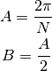
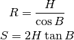
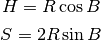
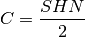

polygon – Polygon Dimensions¶
Analysis¶
This program computes the following features of a regular N-sided Polygon
Given
N = “Number of sides/radials”

And one of these:
H = “Perpendicular distance from centre to mid point of each side”

R = “Length of radial from centre to end of each side”

S = “Length of each side”

It computes the following:
H = “Perpendicular distance from centre to mid point of each side”
R = “Length of radial from centre to end of each side”
A = “Angle between radials”
S = “Length of each side”
P = “Perimeter”
D = “Circumference of circle running thru mid points of sides”
E = “Circumference of circle running thru end points of sides”
C = “Area of polygon”

Implementation¶
This is a Solver that works with B, S and H to derive the missing values.
hamcalc.math.polygon
A Solver for properties of a regular N-sided polygon.
- hamcalc.math.polygon.polygon(N, H=None, R=None, S=None)¶
Solve polygon problems. This an instance of Polygon.
The number of sides, N, is required. One of these three is also required.
- H = “Perpendicular distance from centre to mid point of each side”
- R = “Length of radial from centre to end of each side”
- S = “Length of each side”
This will also compute a number of additional values:
- A = “Angle between radials”
- P = “Perimeter”
- D = “Circumference of circle running thru mid points of sides”
- E = “Circumference of circle running thru end points of sides”
- A_P = “Area of polygon”
Parameters: - N – The number of sides; required.
- H – Perpendicular distance from centre to mid point of each side
- R – Length of radial from centre to end of each side
- S – Length of each side
Returns: Dict with the required parameters plus a number of derived values.
Example Output
>>> import hamcalc.math.polygon as polygon
>>> import math
>>> x = polygon.polygon( N=3, S=12 )
>>> x
{'A': 2.0943951023931953, 'B': 1.0471975511965976, 'E': 43.53118474162123, 'D': 21.76559237081062, 'A_P': 62.353829072479606, 'H': 3.4641016151377557, 'N': 3, 'P': 36, 'S': 12, 'R': 6.92820323027551}
>>> round( math.degrees( x.A ), 6 )
120.0
>>> round( math.degrees( x.B ), 6 )
60.0
>>> sq= polygon.polygon( N=4, S=10 )
>>> sq
{'A': 1.5707963267948966, 'B': 0.7853981633974483, 'E': 44.42882938158366, 'D': 31.41592653589794, 'A_P': 100.00000000000001, 'H': 5.000000000000001, 'N': 4, 'P': 40, 'S': 10, 'R': 7.0710678118654755}
>>> round( math.degrees( sq.A ), 6 )
90.0
>>> round( math.degrees( sq.B ), 6 )
45.0
>>> round(2*sq.R**2, 6)
100.0
- class hamcalc.math.polygon.Polygon[source]¶
Solver for polygon problems.
- solve(args)[source]¶
Solve a polygon.
The number of sides, N, is required.
One of these three is also required.
- H = “Perpendicular distance from centre to mid point of each side”
- R = “Length of radial from centre to end of each side”
- S = “Length of each side”
This will also compute a number of additional values:
- A = “Angle between radials”
- P = “Perimeter”
- D = “Circumference of circle running thru mid points of sides”
- E = “Circumference of circle running thru end points of sides”
- A_P = “Area of polygon”
Returns: AttrDict with all values computed.
Legacy Quirks¶
The GOSUB/GOTO tangle between lines 440 and 480 is hopeless. A RETURN or something would be helpful.